Chapter 7: Sustainability, Standards, Certification & Regulation¶
Data centres are now big enough to matter for national electricity grids, water supplies and climate targets, so they are measured, certified and regulated more than ever. This chapter explains the efficiency metrics everyone quotes, how operators buy clean energy and count carbon and water, and the laws, local rules and moratoria that decide where new sites can be built. It also covers the certifications customers ask for, from ISO and SOC reports to Uptime Tiers, green-building ratings and Open Compute readiness.
7.1 Data Centres and the Environment¶
Data centres run day and night, so they use a lot of electricity, and some also use a lot of water for cooling. Building them needs land, steel and concrete, and their backup generators and fans can be noisy. Sustainability means measuring all of these effects honestly and then reducing them without making the service less reliable.
Think of it like…
A data centre's footprint is like a household's: there are monthly bills (electricity and water), plus the one-off cost of building the house in the first place, and you need to count both.
Real-world example
Fictional Harbourline Colocation plans a campus with an average IT load of 18 MW and a PUE of 1.3. That is 18 x 1.3 = 23.4 MW drawn all year, or about 205,000 MWh (205 GWh) per year. On a grid emitting 0.25 kg of CO2 per kWh, that is roughly 51,000 tonnes of CO2 a year before any clean-energy purchases. The steel and concrete for the buildings add a large one-off 'embodied' carbon cost on top.
How it works¶
- Measure energy: total facility electricity, IT electricity and where it comes from (grid mix, renewables).
- Measure water: how much is withdrawn, how much evaporates (is consumed) and whether it is drinking-quality.
- Count carbon from operations (electricity, generator fuel, refrigerant leaks) and from construction and equipment (embodied carbon).
- Look at local effects too: land, grid capacity, noise, generator exhaust and community impact.
- Set targets, report publicly and improve design and operations year after year.
Who uses it
Sustainability managers, energy engineers, ESG reporting teams, site selection teams, planners and regulators all work with these numbers.
Key takeaway
Remember the IEA's headline: data centres used about 415 TWh in 2024 (around 1.5% of world electricity), and its base case roughly doubles that to about 945 TWh by 2030.
Going deeper
- Operational carbon is energy multiplied by grid intensity: an 18 MW IT load at PUE 1.3 uses about 205 GWh a year, so the grid mix usually matters more than small PUE gains.
- Demand is geographically concentrated: LBNL estimated US data centres used about 4.4% of US electricity in 2023, and in Ireland the share passed a fifth, so local effects far exceed global averages.
- Water has two parts: on-site cooling water and the off-site water used by thermal power plants generating the site's electricity, so a 'zero-water' site can still have an indirect footprint.
- Embodied carbon covers construction materials and IT hardware; for sites on clean power it can exceed operational emissions, which is why EPDs and whole-life carbon assessments now appear in tenders.
- Diesel generators run only during tests and outages, but dozens of engines on one campus can still be a significant local source of nitrogen oxides, so air permits cap their run-hours.
- Professionals report impacts both per unit (per kWh of IT, per MW) and as absolute totals, because efficiency ratios can improve while total energy, water and carbon keep growing.
Common mistakes & misconceptions
- Judging a site by PUE alone: a low PUE achieved with evaporative cooling in a dry region can hide heavy water use and local opposition.
- Assuming '100% renewable' means zero emissions; annual certificate matching still leaves hours supplied by fossil generation on the local grid.
- Ignoring embodied carbon: once electricity is clean, concrete, steel and server manufacturing can become the largest share of the footprint.
- Quoting small global percentages to dismiss concerns; impacts are local, and one campus can dominate a town's grid, water or noise environment.
Try it: Annual energy and operational carbon of a site (Python)¶
it_load_mw = 18 # average IT load
pue = 1.3
grid_kg_per_kwh = 0.25 # grid carbon intensity
facility_mw = it_load_mw * pue
mwh_per_year = facility_mw * 8760
tonnes_co2 = mwh_per_year * 1000 * grid_kg_per_kwh / 1000
print(f"Facility draw: {facility_mw:.1f} MW")
print(f"Energy: {mwh_per_year:,.0f} MWh/yr")
print(f"Location-based CO2: {tonnes_co2:,.0f} t/yr")
Key equipment, standards, metrics, vendors & tools¶
| Name | What it does | Example |
|---|---|---|
| US data-centre electricity share Lawrence Berkeley National Laboratory (Dec 2024 report for US DOE) · Metric · Current · Sustainability |
LBNL found US data centres used about 176 TWh in 2023, around 4.4% of US electricity. | The same report projected 6.7% to 12% of US electricity by 2028, depending on AI growth and efficiency. |
| Operational carbon GHG Protocol; general sustainability concept · Concept · Current · Sustainability |
Emissions caused by running the site day to day: grid electricity, generator diesel and leaked refrigerant gases. | A site on a coal-heavy grid can have ten times the operational carbon of the same site on a hydro-powered grid. |
| Embodied carbon EN 15978 / ISO 21930 life-cycle stages · Concept · Current · Sustainability |
Emissions released making and transporting materials and equipment: steel, concrete, generators, batteries, cables and servers. | For a site powered by clean electricity, embodied carbon in the building and servers can become the largest part of its footprint. |
| Water withdrawal vs consumption WRI; ISO/IEC 30134-9 context · Concept · Current · Sustainability |
Withdrawal is all water taken in; consumption is the part that evaporates or is not returned locally. | A cooling tower may withdraw 100 m3 per day but consume 80 m3, returning 20 m3 as blowdown to the sewer. |
| Grid carbon intensity Grid operators; national inventories; Electricity Maps; WattTime · Metric · Current · Sustainability |
Grams of CO2 emitted per kWh of electricity on a given grid, varying by country, region and hour. | The same 1 MWh might cause about 30 kg CO2 in a hydro-rich grid but over 600 kg on a coal-heavy grid. |
| Land use Local planning authorities · Concept · Current · Facilities |
The area taken by buildings, substations, roads and buffers; large campuses can cover hundreds of acres. | A council weighs a 60-hectare campus against farmland, housing needs and the jobs and tax income it brings. |
| Noise Local noise ordinances; WHO environmental noise guidelines · Concept · Current · Facilities |
Steady low hum from chillers, fans and transformers, plus loud generator tests, that can annoy nearby residents. | Residents near a campus complain of a constant hum at night, so the operator adds acoustic barriers and quieter fans. |
| Generator exhaust emissions Local air-quality regulators (e.g. US EPA, Virginia DEQ, EU Medium Combustion Plant Directive) · Concept · Current · Electrical |
Diesel backup generators emit nitrogen oxides and particulates, mostly during monthly tests and grid outages. | A site's air permit caps how many hours per year its 40 generators may run for testing and maintenance. |
| E-waste and hardware refresh EU WEEE Directive; ITAD industry · Concept · Current · IT |
Servers, drives and batteries are replaced every few years, creating electronic waste unless reused or recycled. | A cloud provider refreshing 50,000 servers sends them for data wiping, parts harvesting and certified recycling. |
| AI demand growth IEA; LBNL; industry analysts · Concept · Emerging · IT |
AI clusters are the fastest-growing source of data-centre electricity demand, concentrating hundreds of megawatts in single campuses and straining local resources. | A region that used to add 50 MW of data centres a year suddenly receives requests for several 500 MW AI campuses. |
| Rebound effect (Jevons paradox) Economics concept (W. S. Jevons, 1865) · Concept · Current · General |
When something becomes more efficient and cheaper, people often use more of it, so total consumption can still rise. | Chips get twice as efficient per calculation, but demand for AI grows tenfold, so total electricity use still climbs. |
| Local electricity price impact Utility regulators; consumer advocates; grid-operator market reports · Concept · Emerging · Business |
Concern that grid upgrades and capacity costs driven by data-centre growth are passed on to household and small-business electricity bills. | A state regulator requires a new campus to pay for its own substation so residential customers do not fund it. |
| Environmental impact assessment (EIA) EU EIA Directive 2011/92/EU (amended by 2014/52/EU); national planning laws · Procedure · Current · Sustainability |
Formal study of a project's likely effects on air, water, noise, ecology, traffic and climate before planning permission is decided. | A 200 MW campus application includes an EIA report on generator emissions, night-time noise at nearby homes and effects on a protected wetland. |
7.2 Efficiency KPIs: PUE, WUE, CUE and the ISO/IEC 30134 Family¶
A KPI (key performance indicator) is a number that tells you how well something is doing. Data-centre KPIs compare, for example, total energy with the energy that reaches the computers, or water and carbon per unit of IT energy. They are defined in the international ISO/IEC 30134 series and its European twin EN 50600-4, so everyone calculates them the same way.
ISO/IEC 30134 KPIs at a glance
| Formula | Unit / range | Better | |
|---|---|---|---|
| PUE (-2) | Total energy ÷ IT energy | Ratio, 1.0 minimum | Lower |
| REF (-3) | Renewable ÷ total energy | 0 to 1 | Higher |
| ERF (-6) | Reused ÷ total energy | 0 to 1 | Higher |
| CER (-7) | Heat removed ÷ cooling energy | Ratio | Higher |
| CUE (-8) | CO2 ÷ IT energy | kgCO2/kWh | Lower |
| WUE (-9) | Site water ÷ IT energy | L/kWh | Lower |
Watch the denominators: PUE, WUE and CUE divide by IT energy, while REF and ERF divide by total energy.
Think of it like…
PUE is like a delivery company's 'fuel per parcel' figure: it does not tell you whether the parcels were useful, only how much extra energy the overhead (cooling, lighting, losses) costs on top of the IT itself.
Real-world example
In one year fictional Kestrel Data's site used 26,000 MWh in total, of which 20,000 MWh reached IT equipment, so PUE = 26,000 / 20,000 = 1.30. It used 36,000 m3 of water, so WUE = 36,000,000 litres / 20,000,000 kWh = 1.8 L/kWh. It bought 13,000 MWh of qualifying renewable energy, giving REF = 13,000 / 26,000 = 0.5, and sold 2,600 MWh of heat to a district network, giving ERF = 2,600 / 26,000 = 0.1.
How it works¶
- Install meters: utility incoming meters for total energy and meters at the UPS or PDU outputs (or the IT inputs) for IT energy.
- Collect a full year of data so seasons are included; ISO/IEC 30134-2 PUE is an annual figure.
- Calculate PUE = total facility energy / IT equipment energy, and state which measurement category you used.
- Add the other KPIs: WUE (water), CUE (carbon), REF (renewables), ERF (reused heat), CER (cooling efficiency).
- Report them together; one KPI alone can hide problems (e.g. low PUE achieved with heavy water use).
Who uses it
Energy managers, facility engineers, sustainability analysts and auditors calculate and verify these KPIs, and EU operators now report several of them by law.
Key takeaway
Know that PUE can never be below 1.0, that 1.0 would mean zero overhead, and that ISO/IEC 30134-2 requires annual energy (kWh), not a single instantaneous power reading.
Going deeper
- ISO/IEC 30134 parts: 1 overview, 2 PUE, 3 REF, 4 ITEEsv, 5 ITEUsv, 6 ERF, 7 CER, 8 CUE and 9 WUE; Europe publishes matching parts as EN 50600-4-x, used in EU reporting.
- PUE categories: PUE1 measures IT energy at UPS outputs, PUE2 at PDU outputs and PUE3 at the IT equipment input; deeper metering counts distribution losses correctly and gives a more honest figure.
- PUE worsens at low load because fixed losses in transformers, UPS, fans and pumps are spread over little IT energy, so new halls often report poor PUE until they fill up.
- Server fans count as IT energy, so moving to liquid cooling can nudge PUE up even when total energy falls; researchers have proposed IT-level metrics such as ITUE and TUE to capture this.
- Typical values: legacy enterprise rooms often 1.6-2.0, industry survey averages around 1.5-1.6, best hyperscale fleets near 1.1; compare sites only with similar climate, load and measurement category.
- EU Delegated Regulation 2024/1364 makes sites of 500 kW and above report these KPIs yearly, so meters at utility intake, UPS outputs, water make-up and heat export are now compliance equipment.
Common mistakes & misconceptions
- Quoting an instantaneous or best-month PUE; ISO/IEC 30134-2 requires annual energy, and summer chiller hours usually push the figure up.
- Comparing PUE across measurement categories; a PUE1 figure taken at UPS outputs flatters a site compared with a PUE3 measurement.
- Treating lower PUE as always better: evaporative cooling or removing server fans can lower PUE while raising water use or hiding IT effects.
- Mixing up denominators: REF and ERF divide by total facility energy, whereas WUE and CUE divide by IT energy.
Try it: Calculate PUE, WUE, CUE, REF and ERF from annual meter readings (Python)¶
total_kwh = 26_000_000 # whole facility
it_kwh = 20_000_000 # IT equipment
water_l = 36_000_000 # site water use
co2_kg = 6_500_000 # CO2 from all site energy
renew_kwh = 13_000_000 # qualifying renewable energy
reused_kwh = 2_600_000 # heat exported for reuse
print("PUE =", round(total_kwh / it_kwh, 2))
print("WUE =", round(water_l / it_kwh, 2), "L/kWh")
print("CUE =", round(co2_kg / it_kwh, 3), "kgCO2/kWh")
print("REF =", round(renew_kwh / total_kwh, 2))
print("ERF =", round(reused_kwh / total_kwh, 2))
Key equipment, standards, metrics, vendors & tools¶
| Name | What it does | Example |
|---|---|---|
| ISO/IEC 30134-2 (PUE) ISO/IEC JTC 1/SC 39; mirrored by EN 50600-4-2; metric originally from The Green Grid · Standard · Current · Sustainability |
The part defining how PUE must be measured: annual kWh, metered boundaries, a stated measurement category and rules for partial PUE. | An auditor rejects a PUE quoted from one cool winter afternoon, because ISO/IEC 30134-2 requires a full year of energy data. |
| PUE measurement categories ISO/IEC 30134-2 (PUE1, PUE2, PUE3) · Concept · Current · Sustainability |
Categories show where IT energy is measured: UPS output, PDU output or IT equipment input; deeper is more accurate. | A colo reporting 'PUE1' measured IT energy at UPS outputs, so PDU losses count as IT, flattering the figure slightly. |
| Partial PUE (pPUE) ISO/IEC 30134-2; EN 50600-4-2 · Metric · Current · Sustainability |
PUE for one zone or subsystem, such as a single data hall or a containerised module, within a larger site. | A campus reports pPUE 1.15 for its new liquid-cooled hall and 1.45 for an older air-cooled hall. |
| ISO/IEC 30134-3 (REF) ISO/IEC 30134-3; EN 50600-4-3 · Standard · Current · Sustainability |
Defines the Renewable Energy Factor: renewable energy used divided by total data-centre energy, and which instruments may count towards it. | An auditor checks that each MWh counted in a site's REF is backed by on-site metering, a PPA or properly retired certificates. |
| ITEEsv (IT Equipment Energy Efficiency for servers) ISO/IEC 30134-4; EN 50600-4-4 · Metric · Current · IT |
Rates how much computing capability installed servers deliver per watt, based on benchmark data. | A team compares two server models' benchmark efficiency before buying 2,000 units for a refresh. |
| ITEUsv (IT Equipment Utilisation for servers) ISO/IEC 30134-5; EN 50600-4-5 · Metric · Current · IT |
Average CPU utilisation of servers, showing how much of the installed capacity is actually used. | Measuring 12% average utilisation prompts an enterprise to virtualise and switch off a third of its servers. |
| ISO/IEC 30134-6 (ERF) ISO/IEC 30134-6; EN 50600-4-6 · Standard · Current · Sustainability |
Defines the Energy Reuse Factor: energy reused outside the data centre divided by total energy, measured at the export point. | A site counts only the heat actually metered into the town's heating network, not the heat it could theoretically supply. |
| CER (Cooling Efficiency Ratio) ISO/IEC 30134-7; EN 50600-4-7 · Metric · Current · Mechanical |
Heat removed by the cooling system divided by the energy the cooling system uses; higher is better. | Free-cooling in winter raises a site's CER sharply compared with summer chiller operation. |
| ISO/IEC 30134-8 (CUE) ISO/IEC 30134-8; EN 50600-4-8; originally The Green Grid · Standard · Current · Sustainability |
Defines Carbon Usage Effectiveness: total CO2 from data-centre energy per kWh of IT energy, using documented emission factors. | A sustainability report states which emission-factor source and year it used, so customers can compare CUE values fairly between sites. |
| ISO/IEC 30134-9 (WUE) ISO/IEC 30134-9; EN 50600-4-9; originally The Green Grid · Standard · Current · Sustainability |
Defines Water Usage Effectiveness: annual site water used for the data centre, in litres, per kWh of IT energy. | The facility team installs dedicated meters on cooling make-up water so its reported WUE follows the standard's measurement boundary. |
| EN 50600-4 series CENELEC (CLC/TC 215) · Standard · Current · Sustainability |
European KPI standards that mirror ISO/IEC 30134 parts, used in EU contracts and regulation. | An EU tender asks bidders to report PUE according to EN 50600-4-2. |
| The Green Grid Non-profit industry consortium (founded 2007) · Organisation · Current · General |
Industry group that popularised PUE, CUE and WUE before they became ISO/IEC standards. | Students often see early PUE white papers from The Green Grid cited in textbooks and vendor guides. |
| Design PUE vs measured PUE ISO/IEC 30134-2 practice; national rules such as Germany's EnEfG · Concept · Current · Sustainability |
Design PUE is predicted for a chosen load and climate; measured PUE comes from a year of metering and is usually higher at low load. | A new hall designed for PUE 1.2 measures 1.45 in its first year because only a quarter of its IT capacity is installed. |
7.3 Renewable Energy, PPAs and 24/7 Carbon-Free Energy¶
Most data centres cannot build enough solar or wind on their own roof, so they buy clean energy from wind and solar farms elsewhere. They do this with long contracts called power purchase agreements (PPAs) and with certificates that prove a unit of clean energy was made. The newest goal is to match every hour of use with clean energy, not just the yearly total.

Think of it like…
Annual matching is like saying you ate five portions of vegetables a day because you ate 35 on Sunday; hourly matching checks every single meal.
Real-world example
Fictional Brightfield Cloud uses 400 GWh a year. It signs a 15-year virtual PPA with a 150 MW wind farm that produces about 450 GWh a year, enough to claim 100% annual matching. But hour-by-hour analysis shows only 68% of its consumption happened when the wind farm was producing. To close the gap it adds a solar PPA and battery storage, raising its hourly carbon-free score to 85%.
How it works¶
- Measure consumption, ideally hour by hour, at each site.
- Choose instruments: on-site generation, physical PPA, virtual PPA, green tariff or certificates (RECs/GOs).
- Prefer new projects on the same grid ('additionality' and deliverability) for real-world impact.
- Retire the certificates that prove the claim, so nobody else can count the same clean energy.
- Track annual and hourly matching, and report under GHG Protocol Scope 2 rules.
Who uses it
Energy procurement managers, sustainability teams, power traders, lawyers and finance teams negotiate PPAs; data-centre developers use them to win customers with climate targets.
Key takeaway
Learn the difference: a physical PPA delivers electricity through the grid to you; a virtual PPA is a financial contract that only transfers certificates and price risk.
Going deeper
- A virtual PPA is a contract for difference: the buyer fixes a strike price, hedging long-term price risk but taking on shape and basis risk when the farm produces at low-price hours or nodes.
- Certificates are the accounting backbone: RECs in North America, Guarantees of Origin in Europe and I-RECs in many other markets each represent 1 MWh and must be retired to support a claim.
- Hourly matching scores are usually well below annual matching; wind-heavy portfolios leave calm and night-time gaps that only storage, clean firm power or diverse contracts can fill.
- Critics test claims on additionality, deliverability (same grid) and timing (same hour); the GHG Protocol Scope 2 revision is debating whether to require hourly and deliverable matching.
- Hyperscalers are among the world's largest corporate buyers of clean power and now contract nuclear, geothermal and storage alongside wind and solar to support 24/7 goals.
- Energy procurement teams model price curves, generation profiles and counterparty credit; PPA terms of 10-20 years are common, so contracts outlast several hardware generations.
Common mistakes & misconceptions
- Thinking a virtual PPA delivers electricity to the site; the data centre still draws grid power and receives only certificates and a financial hedge.
- Claiming 100% renewable from cheap unbundled certificates bought from old plants on distant grids, which adds little real clean generation.
- Equating annual matching with 24/7 carbon-free operation; a site can be '100% matched' yet run on fossil power for many hours.
- Double counting: failing to retire certificates, or letting the generator sell the same green attribute to another buyer.
Try it: Annual vs hourly matching on a tiny 6-hour example (Python)¶
use = [10, 10, 10, 10, 10, 10] # MWh used each hour
wind = [25, 20, 0, 0, 5, 10] # MWh from contracted wind
annual = min(sum(wind) / sum(use), 1)
hourly = sum(min(u, w) for u, w in zip(use, wind)) / sum(use)
print(f"Volume (annual-style) match: {annual:.0%}")
print(f"Hourly match: {hourly:.0%}")
Key equipment, standards, metrics, vendors & tools¶
| Name | What it does | Example |
|---|---|---|
| Physical PPA Bilateral contract; regulated by national electricity market rules · Concept · Current · Business |
Long-term contract to buy electricity and certificates from a specific generator, delivered to the buyer through the grid. | A colo signs a 12-year physical PPA with a nearby solar farm, which delivers power to its local supply point. |
| Virtual PPA (VPPA) Financial contract-for-difference; ISDA-style agreements · Concept · Current · Business |
A financial deal: the generator sells power to the market and the buyer settles the price difference and receives the certificates. | A company in Texas pays or receives the gap between a fixed $45/MWh strike price and the market price for a wind farm's output. |
| REC (Renewable Energy Certificate) US state tracking registries (e.g. PJM-GATS, M-RETS, ERCOT) · Document · Current · Sustainability |
Certificate proving 1 MWh of renewable electricity was generated; bought with PPAs or separately ('unbundled'). | Buying cheap unbundled RECs from a distant old wind farm lets a firm claim green power with little real-world impact. |
| Guarantee of Origin (GO) EU Renewable Energy Directive; AIB European Energy Certificate System · Document · Current · Sustainability |
The EU's 1 MWh energy attribute certificate; international markets often use I-RECs instead. | A Dutch colo cancels GOs from Norwegian hydro each year to claim 100% renewable supply. |
| Additionality GHG Protocol; RE100; climate NGOs · Concept · Current · Sustainability |
Whether your purchase caused new clean generation to be built that would not otherwise exist. | Funding a brand-new solar farm through a PPA is additional; buying certificates from a 30-year-old dam usually is not. |
| 24/7 carbon-free energy (CFE) UN 24/7 Carbon-Free Energy Compact (2021); EnergyTag · Concept · Emerging · Sustainability |
Matching every hour of electricity use with carbon-free supply on the same grid, rather than a yearly total. | A site scores 90% CFE: 10% of its hourly consumption still came from fossil generation on the local grid. |
| Google 24/7 CFE goal Google (announced 2020) · Concept · Current · Business |
Google's goal to run on carbon-free energy every hour on every grid where it operates by 2030. | Google publishes an hourly CFE percentage per data-centre region, which varies widely between grids. |
| Microsoft 100/100/0 commitment Microsoft (announced 2021) · Concept · Current · Business |
Microsoft's aim that by 2030, 100% of its electricity, 100% of the time, is matched by zero-carbon purchases. | Microsoft uses this commitment alongside its pledge to be carbon negative by 2030. |
| Hourly energy certificates EnergyTag Granular Certificate Scheme Standard · Standard · Emerging · Sustainability |
Certificates stamped with the hour of generation so consumption can be matched hour by hour. | A grid registry issues hour-stamped certificates so a solar farm's noon output cannot cover midnight use. |
| RE100 Climate Group with CDP · Organisation · Current · Business |
Global initiative of large companies committed to 100% renewable electricity, with technical criteria for credible claims. | A company joining RE100 must report progress yearly and follow its rules on which certificates count. |
| Nuclear PPAs and SMR deals Hyperscalers with nuclear operators and small modular reactor developers · Concept · Emerging · Electrical |
Long-term contracts for firm nuclear output, which count as carbon-free every hour and help close the gaps wind and solar leave in 24/7 matching. | A cloud provider pairs a nuclear PPA with solar contracts so its night-time consumption is also matched by carbon-free supply. |
| GHG Protocol Scope 2 revision GHG Protocol (WRI and WBCSD) · Standard · Emerging · Sustainability |
Ongoing revision proposing hourly matching and deliverability rules for market-based claims; consultation closed January 2026. | A summary of about 1,100 responses was published in July 2026; a final standard is not expected before 2028. |
| Green tariff Electricity utilities and retailers · Service · Current · Business |
A utility product supplying renewable-backed electricity, sometimes from named new projects, without the buyer signing a PPA. | A mid-sized colo without PPA expertise opts into its utility's green tariff tied to a new solar plant. |
| Clean firm power Geothermal, hydro, nuclear and long-duration storage developers (e.g. Fervo Energy) · Concept · Emerging · Sustainability |
Carbon-free generation available around the clock, such as geothermal, hydro and nuclear, needed to reach very high hourly matching scores. | Google worked with NV Energy on a Clean Transition Tariff to bring 115 MW of Fervo geothermal power to its Nevada data centres. |
7.4 Carbon Accounting and Embodied Carbon¶
Carbon accounting is bookkeeping for greenhouse gases. Emissions are sorted into three 'scopes': Scope 1 is what you burn or leak yourself, Scope 2 is from the electricity you buy, and Scope 3 is everything in your supply chain, including the carbon locked into steel, concrete and servers. As data centres switch to clean power, the embodied carbon in construction and hardware becomes the hardest part to reduce.
Think of it like…
Scope 1 is the fuel in your own car, Scope 2 is the electricity for your home, and Scope 3 is the carbon in everything you buy, from food to the house itself.
Real-world example
Fictional Kestrel Data's site uses 100,000 MWh a year on a grid averaging 0.35 kg CO2/kWh, so its location-based Scope 2 is 35,000 t. It buys certificates for 80,000 MWh from a wind PPA; the remaining 20,000 MWh use a residual-mix factor of 0.45, so market-based Scope 2 is 9,000 t. Generator testing burns 50,000 litres of diesel (about 135 t CO2, Scope 1). Building its new hall used concrete and steel worth roughly 25,000 t CO2e (Scope 3).
How it works¶
- Set boundaries: which sites, companies and activities are in your inventory.
- Scope 1: add generator fuel, gas boilers and refrigerant leaks (converted using global warming potentials).
- Scope 2: report both location-based (grid average) and market-based (contracts and certificates) figures.
- Scope 3: estimate purchased goods, capital goods (buildings, servers), transport, waste and customer use where relevant.
- Set science-based targets and cut the biggest sources first: low-carbon concrete and steel, longer hardware life, clean power.
Who uses it
Carbon accountants, ESG analysts, sustainability consultants, structural and design engineers, and procurement teams all work with these figures.
Key takeaway
Always state both Scope 2 numbers; a market-based figure near zero with a high location-based figure tells you the site relies on contracts and certificates.
Going deeper
- Refrigerant leaks are converted with global warming potentials: one kilogram of R-410A (GWP about 2,000) counts as roughly two tonnes of CO2e, so leak detection matters for Scope 1.
- Since the 2015 Scope 2 Guidance, companies report both location-based and market-based totals; investors compare them to see how much a claim depends on contracts and certificates.
- Boundaries depend on the consolidation approach (operational or financial control), so colocation contracts should clarify who reports the tenant's IT electricity and share metered data.
- Embodied carbon follows EN 15978 stages: A1-A3 product, A4-A5 construction, B use and replacement, C end of life and D benefits beyond the boundary; data-centre LCAs focus heavily on A1-A3.
- Cloud providers' Scope 3 is dominated by purchased and capital goods such as chips, servers, memory and construction materials, which is why supplier EPDs and product carbon footprints matter.
- Third-party verification against ISO 14064-3 or similar assurance standards, plus audited CSRD reporting in the EU, turns carbon figures into reviewed numbers with legal consequences.
Common mistakes & misconceptions
- Reporting only market-based Scope 2; the GHG Protocol requires both, otherwise certificate-based claims look like physical reductions.
- Forgetting refrigerant leaks and generator fuel in Scope 1; they are often small but highly visible in audits.
- Treating offsets as reductions; carbon credits are reported separately and do not lower Scope 1, 2 or 3 inventory totals.
- Ignoring hardware: for clean-powered sites, servers and construction can dominate lifetime emissions.
Try it: Location-based vs market-based Scope 2 (Python)¶
mwh = 100_000
grid_avg = 0.35 # t CO2 per MWh, location-based factor
residual = 0.45 # t CO2 per MWh, residual-mix factor
covered = 80_000 # MWh covered by retired PPA certificates
location = mwh * grid_avg
market = (mwh - covered) * residual
print(f"Location-based: {location:,.0f} t CO2")
print(f"Market-based: {market:,.0f} t CO2")
# Scope 1 from diesel: ~2.68 kg CO2 per litre
print(f"Diesel 50,000 L: {50_000*2.68/1000:,.0f} t CO2")
Key equipment, standards, metrics, vendors & tools¶
| Name | What it does | Example |
|---|---|---|
| GHG Protocol Corporate Standard GHG Protocol (WRI and WBCSD) · Standard · Current · Sustainability |
The world's most used rulebook for company greenhouse-gas inventories, defining Scopes 1, 2 and 3. | A colo's annual sustainability report states its emissions 'in line with the GHG Protocol Corporate Standard'. |
| Scope 1 emissions GHG Protocol · Concept · Current · Sustainability |
Direct emissions from sources you own: diesel generators, gas boilers, vehicles and refrigerant leaks. | A chiller leaking 50 kg of R-410A adds about 100 t CO2e to Scope 1, because the gas's GWP is around 2,000. |
| Scope 2 location-based GHG Protocol Scope 2 Guidance (2015) · Metric · Current · Sustainability |
Electricity emissions using the average emission factor of the local grid, ignoring contracts. | 100,000 MWh on a grid averaging 0.35 t/MWh gives 35,000 t CO2 location-based. |
| Scope 2 market-based GHG Protocol Scope 2 Guidance (2015) · Metric · Current · Sustainability |
Electricity emissions reflecting contracts and certificates bought; uncovered energy uses a residual-mix factor. | With 80% of energy covered by PPA certificates, the same site reports 9,000 t CO2 market-based. |
| Scope 3 emissions GHG Protocol Corporate Value Chain (Scope 3) Standard · Concept · Current · Sustainability |
All other value-chain emissions in 15 categories; for data centres, capital goods like buildings and servers dominate. | A cloud provider finds most of its Scope 3 comes from manufacturing chips, servers and construction materials. |
| Embodied carbon stages (A1-A5) EN 15978; EN 15804 · Concept · Current · Sustainability |
Life-cycle stages for buildings: raw materials, transport, manufacturing (A1-A3), then transport to site and construction (A4-A5). | A design team cuts A1-A3 carbon by specifying recycled steel and low-cement concrete for the shell. |
| Whole-life carbon assessment (LCA) EN 15978; ISO 14040/14044 · Practice · Current · Facilities |
Counting emissions over a building's entire life: materials, construction, operation, maintenance, replacement and demolition. | An LCA shows that replacing UPS batteries three times over 30 years adds noticeably to embodied carbon. |
| EPD (Environmental Product Declaration) ISO 14025; EN 15804 · Document · Current · Sustainability |
Independently verified report of a product's environmental impacts, especially embodied carbon per unit. | Procurement asks generator, switchgear and concrete suppliers to provide EPDs so designs can compare options. |
| SBTi (Science Based Targets initiative) SBTi (CDP, UN Global Compact, WRI, WWF partnership) · Organisation · Current · Business |
Validates company emission-reduction targets as consistent with limiting warming to 1.5 C. | A colocation group gets an SBTi-validated target to cut Scope 1 and 2 emissions 46% by 2030 from 2020. |
| Low-carbon concrete and steel Cement and steel industry; EN 197-5 cement types · Material · Current · Facilities |
Concrete using slag, fly ash or calcined clay instead of some cement, and steel made in electric arc furnaces from scrap. | Switching to a 50% slag concrete mix can cut a slab's embodied carbon by around 30-40%. |
| Mass timber (CLT) data centres Cross-laminated timber manufacturers; Microsoft (2024 announcement) · Material · Emerging · Facilities |
Engineered wood panels replacing some steel and concrete; Microsoft announced hybrid CLT data-centre buildings in 2024. | Microsoft reported its hybrid timber design cut embodied carbon substantially versus a steel-and-concrete equivalent. |
| iMasons Climate Accord Infrastructure Masons (founded 2022) · Organisation · Current · Sustainability |
Industry coalition focused on cutting data-centre carbon, especially embodied carbon in materials and equipment. | Members share guidance and push suppliers to publish EPDs for generators, racks and switchgear. |
| Hyperscaler emissions rise Company sustainability reports (Google, Microsoft, Meta) · Concept · Current · Business |
Despite net-zero pledges, several hyperscalers reported rising emissions in 2024-2025, mainly from data-centre build-out and AI. | Google reported emissions about half above 2019; Microsoft about a quarter above its 2020 baseline, largely from construction and hardware. |
| ISO 14064-1 ISO/TC 207 · Standard · Current · Sustainability |
International standard for quantifying and reporting organisation-level greenhouse-gas inventories, often used for verification. | An external verifier checks a colo's inventory against ISO 14064-1 before it is published. |
| Residual mix factor AIB European Residual Mixes; Green-e Residual Mix (US) · Metric · Current · Sustainability |
Emission factor for electricity left after all claimed certificates are removed; applied to uncovered consumption in market-based Scope 2. | A Dutch site applies the published Dutch residual-mix factor, usually higher than the grid average, to the 20% of electricity its PPA does not cover. |
7.5 Water Stewardship¶
Many data centres cool themselves by evaporating water, the same way sweat cools your skin. That works well and saves electricity, but in dry regions it competes with homes and farms for scarce water. Water stewardship means measuring water use, choosing cooling designs that suit the local climate, using non-drinking water where possible, and giving water back to stressed areas.

Think of it like…
Evaporative cooling is like cooling off on a hot day by sweating: very effective, but you have to keep drinking, and in a desert there may not be much to drink.
Real-world example
Fictional Mesa Ridge Data plans a 30 MW site in a dry region. An evaporative design would use around 1.8 litres per kWh of IT energy, about 400 million litres a year at an average 25 MW IT load. Local farmers object at the planning hearing. The company switches to air-cooled chillers with a closed liquid loop, cutting site water to near zero but raising PUE from 1.2 to 1.35, and funds a wetland restoration project in the same watershed.
How it works¶
- Map water risk for the site using tools like WRI Aqueduct before choosing the location.
- Pick the cooling approach: evaporative, adiabatic (water only on hot days), or closed-loop/dry coolers.
- Use non-potable sources such as reclaimed wastewater or rainwater where allowed.
- Meter withdrawal, consumption and discharge; calculate WUE yearly.
- Balance water against energy (less water often means more electricity) and support local replenishment projects.
Who uses it
Mechanical engineers, sustainability managers, site selection teams, water utilities and local planning boards all weigh data-centre water use.
Key takeaway
Remember the water-energy trade-off: cutting water use with dry coolers or chillers usually raises electricity use and PUE, so judge both together.
Going deeper
- Separate withdrawal, consumption and discharge: evaporative systems consume most of what they withdraw, while blowdown returns a smaller, mineral-rich stream to sewers.
- WUE (ISO/IEC 30134-9) covers only site water; adding the water used to generate purchased electricity gives a source-based view that can exceed site use on grids dominated by thermal power plants.
- Location decides everything: the same evaporative design is low-risk in a wet, cool climate and contentious in a high-stress basin, which is why Aqueduct screening happens before land purchase.
- Water-positive and replenishment pledges by Microsoft, AWS, Meta and Google rely on project accounting such as VWBA; credible claims fund projects in the same stressed basins as the data centres.
- EU Delegated Regulation 2024/1364 asks operators to report total water input and the potable share, making drinking-water use visible to regulators and the public.
- Many AI halls use closed-loop direct-to-chip cooling with dry coolers, but chilled-water plants may still use evaporative towers on hot days, so ask for measured annual data, not design claims.
Common mistakes & misconceptions
- Equating low WUE with low water impact; one litre in a water-stressed basin matters far more than in a wet region.
- Ignoring indirect water used at power stations when calling a site 'zero-water'.
- Counting replenishment in a water-rich basin against consumption in a drought-hit one.
- Switching to dry cooling without checking the extra electricity, carbon and PUE it adds.
Try it: Annual water use and WUE for a cooling design (Python)¶
it_mw = 25
wue_l_per_kwh = 1.8 # evaporative design
it_kwh = it_mw * 1000 * 8760
litres = it_kwh * wue_l_per_kwh
print(f"IT energy: {it_kwh/1e6:,.0f} GWh")
print(f"Water: {litres/1e6:,.0f} million litres per year")
print(f"Olympic pools (2.5 ML each): {litres/2.5e6:,.0f}")
Key equipment, standards, metrics, vendors & tools¶
| Name | What it does | Example |
|---|---|---|
| Source water footprint The Green Grid (WUE source); researchers · Concept · Current · Sustainability |
Water used at power stations to generate the site's electricity, which can exceed the site's own cooling water. | A 'zero-water' site on a grid of thermal power plants still has a large indirect water footprint. |
| Water-positive pledges Microsoft, AWS and Meta (each targeting 2030) · Concept · Current · Business |
Pledges to return more water to stressed watersheds than the company consumes, through efficiency and replenishment. | A hyperscaler funds leak repairs in a city's water mains to offset its local data-centre consumption. |
| Google 120% replenishment goal Google (announced 2021) · Concept · Current · Business |
Google's goal to replenish 120% of the freshwater it consumes, on average, by 2030 and improve watershed health. | Google funds wetland, irrigation-efficiency and aquifer-recharge projects near its data-centre regions. |
| WRI Aqueduct World Resources Institute · Tool · Current · Business |
Free online maps rating water stress, drought and flood risk for any location worldwide. | A site-selection analyst rules out two candidate towns rated 'extremely high' baseline water stress in Aqueduct. |
| WWF Water Risk Filter WWF · Tool · Current · Business |
Online tool that scores basin-level and operational water risks for company sites. | A colo group screens its 40 sites and prioritises water projects at the five highest-risk ones. |
| Drought-region controversies Public debates in Chile, Uruguay, Spain and the US South-West · Incident · Current · Business |
Projects in water-stressed areas have faced protests and legal challenges, pushing operators toward air-cooled designs. | After drought protests, Google redesigned planned data centres in Chile and Uruguay to use air cooling. |
| AWS Standard (Alliance for Water Stewardship) Alliance for Water Stewardship · Standard · Current · Facilities |
Global certification standard for responsible site-level water management; not to be confused with Amazon Web Services. | A data-centre campus earns AWS Standard certification after a catchment study and community engagement. |
| Rainwater harvesting Building services designers · Practice · Current · Facilities |
Collecting roof rainwater in tanks for cooling make-up or toilets, reducing mains water use. | A large roof in a rainy climate supplies a meaningful share of a site's cooling-tower make-up water. |
| Baseline water stress WRI Aqueduct · Metric · Current · Sustainability |
Ratio of total water withdrawals to available renewable supply in a basin; above 80% is classed as extremely high stress. | An analyst flags a candidate site whose basin is rated high stress, so only dry-cooled designs are considered there. |
| Volumetric Water Benefit Accounting (VWBA) World Resources Institute and partners (2019) · Standard · Current · Sustainability |
Method for quantifying the litres of benefit delivered by replenishment projects, used to support water-positive and replenishment claims. | A hyperscaler counts the yearly litres restored by a wetland project using VWBA before adding it to its replenishment total. |
| CEO Water Mandate UN Global Compact and Pacific Institute (since 2007) · Organisation · Current · Sustainability |
Business initiative whose members commit to better water management in operations, supply chains and watersheds, and report progress. | A colocation group joins the Mandate and publishes water targets for its sites in high-stress basins. |
| CDP water security disclosure CDP (formerly the Carbon Disclosure Project) · Document · Current · Business |
Annual questionnaire in which companies disclose water withdrawals, risks, targets and governance, scored from A to D-. | Investors compare data-centre operators' CDP water scores when judging drought risk across their portfolios. |
7.6 EU Data-Centre Regulation and Reporting¶
The European Union is the first region to make data centres publicly report their energy and water use by law. Operators above a size threshold send yearly figures to a European database, and the EU is now creating an official sustainability rating for data centres. Some countries, such as Germany, go further with hard limits on efficiency and requirements to reuse waste heat.

Think of it like…
It is like a mandatory energy label on a fridge, but for whole buildings full of computers: first everyone must report their numbers, then they get graded.
Real-world example
Fictional Alpenlink operates a 2 MW colocation site in Germany. Because its installed IT power exceeds 500 kW, it reports energy, PUE, water, renewable share and waste heat to the European database by 15 May each year. Under Germany's Energy Efficiency Act its existing site must reach PUE 1.5 by July 2027 and 1.3 by July 2030, and its electricity must be 100% renewable from January 2027. Its planned new site opening in 2027 must reach PUE 1.2 within two years and reuse at least 15% of its energy.
How it works¶
- Check thresholds: EU reporting applies to data centres with installed IT power demand of at least 500 kW.
- Collect the required indicators (energy, PUE, temperature set points, waste heat, water, renewables, IT capacity).
- Submit yearly to the European database (national schemes may collect and forward the data).
- Follow national rules on top (e.g. Germany's EnEfG limits, heat-reuse duties and energy management systems).
- Prepare for the EU rating scheme and future minimum performance standards.
Who uses it
Compliance managers, energy managers, sustainability reporters and legal teams at EU operators and their customers handle these obligations.
Key takeaway
Memorise the chain: Energy Efficiency Directive (EU) 2023/1791 Article 12, then Delegated Regulation (EU) 2024/1364, first reports due 15 September 2024 and then every 15 May.
Going deeper
- Reported indicators include installed IT power, floor area, total and IT energy, temperature set points, waste heat reused, water input and renewable share, plus data-traffic and storage figures.
- Directives need national transposition, so reporting routes differ: some countries collect data through national registers and forward it, while others have operators report to the EU database directly.
- Germany's EnEfG is the strictest national layer, combining new-build and existing-site PUE limits, renewable electricity, heat-reuse quotas and mandatory energy or environmental management systems.
- The EU Code of Conduct's Best Practice Guidelines feed into the EU Taxonomy criteria for data hosting, linking voluntary practices to green-finance labels and investor reporting.
- NIS2 brings data-centre service providers under cybersecurity supervision, with risk-management duties and staged incident reporting: an early warning within 24 hours and a notification within 72 hours.
- Regulatory and sustainability teams track consultations closely, because a rating scheme and possible minimum performance standards could turn efficiency thresholds into a licence-to-operate issue.
Common mistakes & misconceptions
- Assuming the 500 kW threshold refers to grid connection size; it refers to installed IT power demand.
- Treating the Climate Neutral Data Centre Pact as law; it is voluntary self-regulation, while the EED and EnEfG are binding.
- Forgetting national add-ons: EU reporting alone does not satisfy German PUE, renewable and heat-reuse duties.
- Quoting proposals as final law; check whether a delegated act has completed scrutiny before citing its dates.
Try it: Check whether a site falls under EU reporting and Germany's PUE limits (Python)¶
site = {"country": "DE", "it_kw": 2000, "pue": 1.42, "opened": 2019}
if site["it_kw"] >= 500:
print("In scope of EED Art. 12 reporting (due 15 May yearly)")
if site["country"] == "DE" and site["opened"] < 2026:
for year, limit in [(2027, 1.5), (2030, 1.3)]:
ok = site["pue"] <= limit
print(f"EnEfG PUE <= {limit} by July {year}:", "OK" if ok else "ACTION NEEDED")
Key equipment, standards, metrics, vendors & tools¶
| Name | What it does | Example |
|---|---|---|
| Energy Efficiency Directive (EU) 2023/1791 European Union · Regulation · Current · Sustainability |
Recast EU directive; Article 12 and Annex VII require data centres of 500 kW and above to report sustainability data yearly. | A cloud provider's Irish, Dutch and German sites each submit data under their national transpositions of Article 12. |
| Delegated Regulation (EU) 2024/1364 European Commission · Regulation · Current · Sustainability |
Sets the indicators, methods and deadlines for data-centre reporting: first by 15 September 2024, then by 15 May yearly. | An operator reports its PUE, WUE, renewable share, heat reuse and IT capacity using the regulation's templates. |
| European database on data centres European Commission · System · Current · General |
EU database collecting the reported indicators; aggregated figures are published while some site details stay confidential. | Researchers use the published aggregated data to compare average PUE across EU countries. |
| EU data-centre sustainability rating (2026 proposal) European Commission (delegated regulation proposed 21 September 2026) · Regulation · Emerging · Sustainability |
Proposed common sustainability rating for data centres above 500 kW, covering energy, water, clean energy, grid flexibility and heat reuse. | Under the proposal, labels would be generated yearly from 15 August 2027, if Parliament and Council do not object. |
| Minimum performance standards European Commission (consultation 2026) · Regulation · Emerging · Sustainability |
Possible future EU minimum efficiency requirements for data centres, being consulted on alongside the rating scheme. | An operator's trade association responds to the consultation, arguing for climate-adjusted PUE thresholds. |
| EU Code of Conduct on Data Centre Energy Efficiency European Commission Joint Research Centre (since 2008) · Standard · Current · Sustainability |
Voluntary programme with a yearly-updated Best Practice Guidelines list that participants commit to implement. | A colo becomes a Participant, submits an energy baseline and implements expected practices like hot/cold aisle containment. |
| Climate Neutral Data Centre Pact CISPE and EUDCA (launched 2021) · Organisation · Current · Sustainability |
Self-regulatory initiative of operators and trade bodies pledging climate-neutral European data centres by 2030. | Signatories commit to targets for PUE, carbon-free energy, water use, server reuse and heat-reuse exploration. |
| Germany Energy Efficiency Act (EnEfG) German Federal Government (2023) · Regulation · Current · Sustainability |
German law setting PUE limits for new and existing data centres, 100% renewable electricity from 2027, and energy-management duties for operators. | Existing sites must reach PUE 1.5 from July 2027 and 1.3 from July 2030; electricity must be 100% renewable from 2027. |
| Ecodesign Regulation (EU) 2019/424 European Commission · Regulation · Current · IT |
Ecodesign rules for servers and data-storage products: minimum power-supply efficiency, idle power limits and material information. | A server vendor must publish efficiency data and design for easier disassembly to sell in the EU. |
| EU Taxonomy activity 8.1 Regulation (EU) 2020/852 and Climate Delegated Act · Regulation · Current · Business |
Defines when data hosting counts as 'green' investment: following the EU Code of Conduct practices and using low-GWP refrigerants. | A data-centre fund reports what share of its capital spending is taxonomy-aligned to attract green investors. |
| CSRD and ESRS Directive (EU) 2022/2464; EFRAG standards · Regulation · Current · Business |
EU corporate sustainability reporting with audited climate, water and resource disclosures; the 2025-26 Omnibus package narrowed its scope. | A large EU colo group publishes audited Scope 1-3 emissions and water data in its annual management report. |
| NIS2 Directive (EU) 2022/2555 European Union · Regulation · Current · Security |
Cybersecurity law listing data-centre service providers as digital infrastructure with risk-management and incident-reporting duties. | A colocation provider registers with its national authority and reports significant incidents within 24 hours. |
| Cloud and AI Development Act European Commission (announced in the 2025 AI Continent Action Plan) · Regulation · Emerging · Business |
Planned EU law to speed permitting of sustainable data centres, part of a push to roughly triple EU capacity. | Developers watch it for faster approvals for efficient, clean-powered sites; check its latest legislative status. |
7.7 Moratoria, Local Rules and Community Concerns¶
Even when a company has money and customers, it needs permission to build: grid connections, planning approval, air and noise permits. Some places with many data centres have paused or restricted new ones because the electricity grid was full or residents objected. Knowing these local rules is essential when choosing where to build.
Think of it like…
It is like a popular restaurant in a small village: the owner can afford to expand, but the village decides whether there is enough parking, water and peace and quiet to allow it.
Real-world example
Fictional Kestrel Data wants 150 MW near Dublin. The grid operator cannot offer a near-term connection, and Ireland's new connection policy would require dispatchable on-site or nearby generation and storage matching its import capacity, plus new renewable supply. Kestrel compares this with a Nordic site that has spare hydro capacity and a heat customer, and with a Spanish site that needs a water study. It picks the Nordic site, accepting higher network latency to European cities.
How it works¶
- Check grid connection availability and the rules for large new loads with the transmission or distribution operator.
- Check zoning and planning: is a data centre allowed by right or does it need special approval?
- Obtain environmental permits: generator air permits, noise limits, water abstraction and discharge.
- Engage the community early: traffic, noise, visual impact, jobs, taxes and community benefits.
- Watch for moratoria, new tariffs for large loads and tax-incentive changes that alter the business case.
Who uses it
Site selection specialists, planning consultants, permitting engineers, public-affairs teams and local officials deal with these issues daily.
Key takeaway
In interviews, show you know that power availability, not land or money, is the biggest constraint on data-centre growth in many hubs.
Going deeper
- Moratoria are usually triggered by grids rather than land: Amsterdam (2019), Singapore (2019-2022) and the Dublin region all paused or limited growth because networks could not absorb more large loads.
- Where moratoria end they are replaced by selective rules: designated zones, efficiency targets, heat-reuse expectations or competitive capacity calls such as Singapore's DC-CFA.
- In the US most land-use decisions sit with counties; Loudoun's move away from by-right approval and the Prince William Digital Gateway litigation show how zoning procedure can stop huge plans.
- Generator air permits typically cap non-emergency run-hours and may require cleaner engines or selective catalytic reduction, so testing programmes are planned around those limits.
- Community benefit agreements, local hiring, noise screening and visual design are now standard parts of planning applications rather than optional extras.
- Site-selection teams score regulatory risk alongside grid timelines and water stress, because one lawsuit or moratorium can delay a project longer than any equipment lead time.
Common mistakes & misconceptions
- Assuming that owning land means you can build; zoning, grid offers and permits can each block a project.
- Engaging residents only after filing; early, honest engagement reduces legal challenges and delays.
- Treating moratoria as permanent bans; most are pauses replaced by stricter criteria that projects can be designed to meet.
Try it: Weighted site-selection scorecard including regulatory risk (Python)¶
weights = {"grid_mw_available": 0.35, "permitting_risk": 0.25,
"water_stress": 0.15, "latency": 0.15, "heat_customer": 0.10}
# scores 1 (bad) to 5 (good)
sites = {
"Site A (constrained hub)": [1, 2, 3, 5, 2],
"Site B (Nordic)": [5, 4, 5, 3, 5],
"Site C (dry region)": [4, 3, 1, 4, 1],
}
for name, scores in sites.items():
total = sum(w * s for w, s in zip(weights.values(), scores))
print(f"{name}: {total:.2f} / 5")
Key equipment, standards, metrics, vendors & tools¶
| Name | What it does | Example |
|---|---|---|
| Ireland Large Energy Users connection policy Commission for Regulation of Utilities (CRU), decision December 2025 · Regulation · Emerging · Electrical |
New data centres must bring dispatchable on-site or nearby generation or storage matching their import capacity, participating in the market. | Compliant sites can count associated new renewables towards the requirement and are exempt from mandatory demand curtailment. |
| Amsterdam and Haarlemmermeer moratorium Municipalities of Amsterdam and Haarlemmermeer (2019) · Regulation · Current · Sustainability |
A temporary 2019 pause on new data centres, followed by stricter siting, efficiency and heat-reuse conditions. | Developers were steered to designated zones and asked to show low PUE and heat-delivery plans before approval. |
| Netherlands hyperscale restriction Dutch national government (2022) · Regulation · Current · Sustainability |
National rules limit very large hyperscale data centres to a few designated locations, mainly in the north of the country. | A hyperscale project outside the designated areas is rejected, so the company considers Groningen province instead. |
| Singapore moratorium and DC-CFA Singapore EDB and IMDA · Regulation · Current · Sustainability |
New builds were paused from 2019 to 2022; capacity is now allocated through a competitive Data Centre Call for Application. | Applicants compete on efficiency, green-energy plans and economic contribution for limited megawatts. |
| Singapore Green Data Centre Roadmap IMDA (May 2024) · Document · Current · Sustainability |
Plan for at least 300 MW more capacity near-term, with more for green-energy-powered sites, and better efficiency. | Operators are encouraged toward PUE 1.3 or better and higher operating temperatures suited to the tropics. |
| Frankfurt data-centre master plan City of Frankfurt am Main (2022) · Document · Current · Facilities |
Zoning concept steering new data centres into defined clusters, with design and heat-reuse expectations. | A developer's plot outside the designated clusters is refused, so it buys land in an approved industrial area. |
| Loudoun County by-right change Loudoun County Board of Supervisors, Virginia (2025) · Regulation · Current · Facilities |
Loudoun ended 'by-right' approval of data centres, so new ones generally need a special public approval process. | A developer in 'Data Center Alley' must now hold public hearings and meet design conditions before building. |
| Prince William Digital Gateway case Virginia courts (2025-2026) · Incident · Current · Business |
Court rulings voided the rezoning for a vast proposed data-centre corridor near Manassas Battlefield over public-notice failures. | A circuit court voided the rezoning in August 2025; the Court of Appeals upheld that in 2026. |
| Generator air permits Environmental regulators (e.g. US state agencies, EU member states) · Regulation · Current · Electrical |
Permits that cap generator run-hours and emissions, sometimes requiring exhaust after-treatment or cleaner fuel. | A permit limits each generator to 50 non-emergency hours a year and requires selective catalytic reduction. |
| Noise ordinances Local authorities · Regulation · Current · Facilities |
Limits on sound levels at the site boundary or nearest homes, often stricter at night. | A design must keep night-time noise below 45 dB at nearby houses, requiring acoustic screens and low-speed fans. |
| Tax-incentive debate State and national governments · Concept · Current · Business |
Many places exempt data-centre equipment from sales tax to attract investment; critics question the cost versus jobs created. | A state auditor's report compares millions in forgone sales tax against a few hundred permanent jobs. |
| Community benefit agreement Developers and local communities · Document · Current · Business |
Commitments a developer makes to the community, such as funding schools, parks, training or local hiring. | A developer funds a technician apprenticeship programme at the local college as part of its approval. |
| Water abstraction and discharge permits Environmental regulators (e.g. England's Environment Agency, US state agencies) · Regulation · Current · Sustainability |
Permits controlling how much water a site may take from rivers, aquifers or mains and what it may discharge to sewers. | A campus's discharge consent limits the temperature and treatment chemicals in cooling-tower blowdown sent to the municipal sewer. |
7.8 Green Building and Energy Certifications¶
Certifications are independent badges that show a building was designed or is run in an environmentally responsible way. Some judge the design and construction (like LEED or BREEAM), while others rate how efficiently the building actually runs over a year (like ENERGY STAR or NABERS). Customers, investors and governments often ask for them.
Design ratings vs operational ratings
| Design / build ratings | Operational ratings | |
|---|---|---|
| Examples | LEED BD+C, BREEAM New Construction | ENERGY STAR, NABERS |
| Based on | Drawings, models, site evidence | 12 months of metered data |
| Awarded | At or after handover | After a year of operation |
| Renewal | Usually once per project | Periodic, with fresh data |
| Answers | Was it designed and built well? | Is it run efficiently? |
A building can score well on one and badly on the other.
Think of it like…
A design certification is like a recipe review before cooking; an operational rating is like a food critic tasting the meal every year.
Real-world example
Fictional Brightfield Cloud builds a hall in Sydney and another in Texas. In Sydney it targets a 5-star NABERS rating for the whole facility, measured from 12 months of real energy data. In Texas it pursues LEED Gold for the design and construction, then applies for ENERGY STAR once it has a year of operating data and an engineer verifies the score of 75 or more.
How it works¶
- Pick schemes that matter to your customers and region (e.g. LEED in the US, BREEAM in the UK, Green Mark in Singapore, NABERS in Australia).
- Register early in design so credits (energy, water, materials) are built in rather than retrofitted.
- Collect evidence: drawings, energy models, commissioning reports, metering data and supplier EPDs.
- Undergo independent assessment and obtain the rating level.
- For operational ratings, keep metering and renew regularly; ratings can drop if performance slips.
Who uses it
Sustainability consultants, accredited assessors (e.g. LEED AP, BREEAM Assessors), design teams and facility managers handle certification.
Key takeaway
Distinguish design ratings (LEED, BREEAM) from operational ratings (ENERGY STAR, NABERS); a beautifully designed building can still run inefficiently.
Going deeper
- LEED levels are Certified, Silver, Gold and Platinum by points; the Data Centers adaptation recognises IT energy use rather than treating the data hall like office space.
- An ENERGY STAR score of 75 or more means a site performs better than about three-quarters of similar facilities, using inputs such as total site energy and IT energy measured at UPS output.
- NABERS data-centre ratings are split into IT equipment, infrastructure and whole facility, so an operator and its tenant can each be rated for the part they control.
- Singapore's Green Mark Platinum is effectively expected in its capacity allocation process, showing how voluntary certifications become regulatory gates in constrained markets.
- Certifications need evidence pipelines: metering, commissioning records, EPDs and utility bills, so sustainability and facilities teams plan them from concept design onwards.
Common mistakes & misconceptions
- Assuming a LEED-certified design guarantees efficient operation; only operational ratings prove real performance.
- Letting an operational rating lapse; performance drifts, and ratings need renewal with fresh metered data.
- Advertising '100% green' without evidence; regulators increasingly treat vague or unsubstantiated claims as greenwashing.
Try it: Rough check of a building against a certification energy target (Python)¶
annual_total_mwh = 52_000
annual_it_mwh = 40_000
target_pue = 1.35 # e.g. a project's design target
pue = annual_total_mwh / annual_it_mwh
print(f"Measured PUE {pue:.2f} vs target {target_pue}")
print("On track" if pue <= target_pue else "Needs improvement before assessment")
Key equipment, standards, metrics, vendors & tools¶
| Name | What it does | Example |
|---|---|---|
| ENERGY STAR for data centres US EPA · Certification · Current · Facilities |
Operational certification for data centres scoring 75 or higher on EPA's 1-100 energy-performance scale, verified by a licensed professional. | A US colo earns ENERGY STAR after 12 months of metered data shows it is in the top quarter of similar sites. |
| ENERGY STAR programme status US EPA and Congress · Concept · Current · Business |
The US administration proposed ending ENERGY STAR in 2025; a bipartisan spending bill in early 2026 included funding to continue it. | Operators kept using Portfolio Manager scores while the programme's future was debated. |
| ENERGY STAR Portfolio Manager US EPA · Tool · Current · Facilities |
Free online tool for tracking building energy and water use and calculating ENERGY STAR scores. | A facility manager uploads monthly utility and UPS-output meter data to track PUE and the score. |
| LEED v4.1 BD+C: Data Centers US Green Building Council (USGBC) · Certification · Current · Facilities |
LEED rating adaptation for new data-centre construction, with energy, water, materials and site credits; levels Certified to Platinum. | A developer earns LEED Gold by using reclaimed water, low-carbon concrete and an efficient cooling design. |
| LEED v5 US Green Building Council (launched 2025) · Certification · Emerging · Facilities |
Latest LEED version, placing more weight on decarbonisation, embodied carbon and climate resilience. | New projects registering from 2025 onwards can choose LEED v5 with its stronger carbon prerequisites. |
| BREEAM BRE (Building Research Establishment, UK) · Certification · Current · Facilities |
Widely used sustainability assessment for buildings, rated Pass to Outstanding; data centres are assessed under its new construction scheme. | A UK data-centre developer targets BREEAM Excellent to meet planning conditions and customer requirements. |
| Green Mark for Data Centres Singapore BCA and IMDA · Certification · Current · Facilities |
Singapore's green building rating tailored to data centres, with Platinum as the top level. | Applicants in Singapore's capacity allocation are expected to achieve Green Mark Platinum. |
| NABERS for data centres NABERS (administered by NSW Government, Australia) · Certification · Current · Facilities |
Operational star rating (up to 6 stars) for IT equipment, infrastructure or the whole facility, from 12 months of data. | An Australian government agency requires its colo provider to hold a NABERS infrastructure rating. |
| CEEDA Certified Energy Efficiency for Data Centres Award (independent assessment scheme) · Certification · Current · Facilities |
Assesses a site's energy practices against best-practice frameworks such as the EU Code of Conduct and EN 50600. | A mid-sized enterprise data centre earns a CEEDA Silver award after improving airflow and monitoring. |
| Blue Angel (Blauer Engel) for data centres German Environment Agency (UBA) and RAL · Certification · Current · Facilities |
German eco-label with criteria for energy-efficient data-centre operation, including for colocation sites. | A German public-sector IT service provider uses Blue Angel to prove efficient operations. |
| EPEAT for servers Global Electronics Council · Certification · Current · IT |
Eco-label for IT products, including servers, covering energy, materials, packaging and end-of-life. | A public tender requires EPEAT-registered servers as a minimum environmental criterion. |
| Design vs operational ratings General certification practice · Concept · Current · General |
Design ratings judge plans and construction; operational ratings judge measured performance over time. | A LEED Platinum building can still score poorly on NABERS if it runs half-empty and overcooled. |
| Greenwashing Regulators (e.g. EU Green Claims rules, UK CMA, US FTC Green Guides) · Concept · Current · Business |
Misleading environmental claims, such as '100% green' based only on cheap unbundled certificates. | A colo's '100% renewable' advert is challenged because its claim relies only on unbundled certificates from distant plants. |
7.9 ISO Management-System Certifications¶
A management system is an organised way of running something: written policies, assigned responsibilities, records, regular checks and continual improvement. ISO publishes management-system standards for energy, environment, information security, quality, business continuity and safety. An independent auditor checks the organisation and issues a certificate, which customers often require before signing a contract.
Think of it like…
A management system is like a well-run kitchen's routine: recipes are written down, everyone knows their job, temperatures are logged, and the head chef reviews what went wrong each week and fixes it.
Real-world example
Fictional Harbourline Colocation wants to win a bank as a customer. The bank's supplier questionnaire asks for ISO/IEC 27001, ISO 22301 and ISO 50001 certificates. Harbourline builds one integrated management system covering all three, passes Stage 1 and Stage 2 audits by an accredited certification body, and then faces yearly surveillance audits. Its ISO 50001 energy reviews also cut its PUE from 1.48 to 1.39 within two years.
How it works¶
- Define scope (which sites and services) and get top-management commitment.
- Assess risks and opportunities, set objectives and write the required policies and procedures.
- Run the system: train staff, keep records, monitor KPIs and do internal audits and management reviews.
- Stage 1 audit checks documents and readiness; Stage 2 audit checks the system works in practice.
- Keep the certificate with yearly surveillance audits and a full recertification every three years.
Who uses it
Compliance managers, quality and ISMS managers, internal auditors, lead auditors at certification bodies and facility managers all work with these standards.
Key takeaway
Most ISO management-system standards share the same high-level structure (clauses 4-10, Plan-Do-Check-Act), so learning one makes the others much easier.
Going deeper
- The harmonized structure maps clauses 4-10 to Plan-Do-Check-Act: context, leadership and planning (Plan), support and operation (Do), performance evaluation (Check) and improvement (Act).
- Certificates run on a three-year cycle: Stage 1 and Stage 2 initial audits, surveillance audits in the following years, then recertification; nonconformities need documented corrective action.
- ISO/IEC 27001:2022 Annex A lists 93 controls in four themes (organisational, people, physical, technological); colos operate most of the 14 physical controls on behalf of tenants.
- Scope statements matter: a certificate may cover only certain sites, services or functions, so customers should read the scope and Statement of Applicability, not just the logo.
- Integrated management systems combine 9001, 14001, 45001, 50001, 22301 and 27001 into one document set and audit programme, saving cost for multi-certified operators.
Common mistakes & misconceptions
- Accepting a certificate without checking its scope, validity date and whether the certification body is accredited.
- Treating ISO/IEC 27001 as a technical checklist; it certifies a risk-based management system, not perfect security.
- Confusing ISO/IEC 27002 with 27001; organisations certify only to 27001, while 27002 gives guidance on controls.
Try it: Work out a three-year ISO certification audit calendar (Python)¶
from datetime import date
issued = date(2026, 3, 15) # certificate issue date
plan = [("Surveillance audit 1", 1), ("Surveillance audit 2", 2),
("Recertification audit", 3)]
for name, years in plan:
due = issued.replace(year=issued.year + years)
print(f"{name}: before {due}")
Key equipment, standards, metrics, vendors & tools¶
| Name | What it does | Example |
|---|---|---|
| ISO 50001:2018 ISO/TC 301 · Standard · Current · Sustainability |
Energy management system standard: set an energy baseline, find significant energy uses and improve performance continually. | A colo's ISO 50001 energy review finds over-cooled halls; raising set points saves 6% of annual energy. |
| ISO 14001:2015 ISO/TC 207 · Standard · Current · Sustainability |
Environmental management system standard covering legal compliance, pollution prevention, waste and environmental objectives. | An operator's ISO 14001 system tracks diesel storage, refrigerant leaks and battery recycling. |
| ISO/IEC 27001:2022 ISO/IEC JTC 1/SC 27 · Standard · Current · Security |
Information security management system standard; the transition from the 2013 edition ended in October 2025. | A colocation provider certifies its ISMS covering access control, CCTV and visitor management across five sites. |
| ISO/IEC 27002:2022 ISO/IEC JTC 1/SC 27 · Standard · Current · Security |
Guidance on 93 security controls in four themes, including 14 physical controls relevant to data centres. | Controls such as physical entry, securing offices and protecting against environmental threats map to data-hall practices. |
| Statement of Applicability (SoA) ISO/IEC 27001 clause 6.1.3 · Document · Current · Security |
Document listing which Annex A security controls apply, whether they are implemented and why any are excluded. | A customer asks for a colo's SoA to see which controls the colo covers and which the customer must handle. |
| ISO 22301:2019 ISO/TC 292 · Standard · Current · Operations |
Business continuity management system standard: plan, test and improve how services survive disruptions. | A site runs a yearly exercise simulating loss of its main substation and records lessons learned. |
| ISO 9001:2015 ISO/TC 176 · Standard · Current · Operations |
Quality management system standard focused on consistent processes and customer satisfaction; a revised edition is in preparation. | A data-centre builder uses ISO 9001 procedures to control drawings, inspections and handover documents. |
| ISO 45001:2018 ISO/TC 283 · Standard · Current · Operations |
Occupational health and safety management system standard, covering hazards like electrical work, heights and heavy lifting. | A site's ISO 45001 system requires permits to work and lockout/tagout before switchgear maintenance. |
| ISO/IEC 20000-1:2018 ISO/IEC JTC 1/SC 40 · Standard · Current · IT |
IT service management system standard aligned with practices such as incident, change and service-level management. | A managed-hosting provider certifies its service desk and change process to reassure enterprise clients. |
| ISO 41001:2018 ISO/TC 267 · Standard · Current · Facilities |
Facility management system standard for organising building operations and services to support the core business. | A facilities outsourcing firm certifies its data-centre operations contract under ISO 41001. |
| Harmonized structure (Annex SL) ISO Directives · Concept · Current · General |
Common clause structure (context, leadership, planning, support, operation, evaluation, improvement) shared by ISO management-system standards. | Because 27001, 14001 and 50001 share it, a site runs one integrated management system and combined audits. |
| Climate-change amendments (2024) ISO (Amendment 1:2024 to many management-system standards) · Standard · Current · Sustainability |
2024 amendments require organisations to consider whether climate change is a relevant issue for their management system. | An ISO 22301 auditor now asks whether heatwaves and flooding were considered in the site's context analysis. |
| Accredited certification body Accreditation bodies under IAF (e.g. UKAS, ANAB, DAkkS) · Organisation · Current · General |
Independent auditing firm checked by a national accreditation body, giving its certificates credibility. | A customer accepts a certificate only after confirming the auditor is accredited by a recognised IAF member. |
| Stage 1 and Stage 2 audits ISO/IEC 17021-1 certification practice · Procedure · Current · Operations |
Stage 1 reviews documents and readiness; Stage 2 checks implementation through interviews, records and site walk-throughs. | A Stage 2 auditor samples ten visitor-log entries and checks matching access-card records. |
7.10 Assurance Reports and Customer Compliance (SOC, PCI DSS, HIPAA, FedRAMP)¶
Customers who keep their servers in a colocation data centre still have to prove to their own auditors that their equipment is physically safe. Rather than every customer inspecting the building, the provider gets independent audit reports, such as SOC 1 and SOC 2, and shares them. Customers in regulated industries (card payments, healthcare, government) then 'inherit' the physical controls from these reports.

Think of it like…
It is like a block of flats sharing one building-safety inspection: each tenant does not need to hire their own inspector for the front door and fire alarms, but they are still responsible for locking their own flat.
Real-world example
Fictional online retailer Parcelpoint stores card data on servers in a colo cage. Its PCI DSS assessor asks for evidence of physical security under Requirement 9. Parcelpoint supplies the colo's SOC 2 Type II report covering 12 months of tested access controls, plus a responsibility matrix showing the colo handles building access and CCTV while Parcelpoint controls cage keys and media destruction. The assessor accepts the inherited controls and focuses on Parcelpoint's own responsibilities.
How it works¶
- The provider defines its system and controls (access, CCTV, visitor logs, environmental monitoring, change management).
- An independent CPA firm tests the controls: once at a point in time (Type I) or over a period, usually 6-12 months (Type II).
- The provider shares the report with customers under NDA, plus a bridge letter covering any gap since the period ended.
- Customers map which controls they inherit and which remain their own using a responsibility matrix.
- Customers' auditors (PCI QSA, HIPAA, FedRAMP assessor) review both sides.
Who uses it
Compliance analysts, GRC (governance, risk and compliance) teams, IT auditors, colo sales engineers and customer security teams use these reports.
Key takeaway
Remember: Type I = controls designed properly at one date; Type II = controls actually worked over a period; customers almost always want Type II.
Going deeper
- SOC reports are AICPA attestation engagements under SSAE 18: SOC 1 uses AT-C 320 for financial-reporting controls, while SOC 2 uses AT-C 205 with the Trust Services Criteria.
- A Type II report covers a period, typically 6-12 months, listing each control, the auditor's test and any exceptions; the exceptions section is where customers find real issues.
- Complementary user entity controls (CUECs) list what customers must do themselves for the provider's controls to work, such as keeping their own access lists up to date.
- PCI DSS v4.0.1 Requirement 9 covers physical access, visitor handling and media protection; a colo assessed as a service provider lets merchants inherit those controls.
- FedRAMP uses NIST SP 800-53 baselines (Low, Moderate, High); the PE family covers physical access, emergency power, fire protection, temperature and water-damage controls.
- EU financial customers now add DORA requirements to contracts: audit rights, incident reporting, subcontracting transparency and exit plans for ICT providers, which can include data-centre services.
Common mistakes & misconceptions
- Accepting a SOC 2 Type I when you need evidence of operation; only Type II tests controls over time.
- Ignoring a report's period and exceptions; an old report without a bridge letter leaves gaps in your audit year.
- Assuming the colo covers everything; cage keys, media disposal and server security usually stay with the customer.
- Confusing a public SOC 3 with a SOC 2 report; SOC 3 omits the test details auditors need.
Try it: A simple shared-responsibility matrix as CSV¶
control,colo_provider,customer
Perimeter fencing and guards,X,
Building access badges and biometrics,X,
CCTV recording (90 days),X,
Cage or cabinet keys,,X
Server OS patching,,X
Media destruction,,X
Temperature and humidity monitoring,X,
Visitor escort inside cage,shared,shared
Key equipment, standards, metrics, vendors & tools¶
| Name | What it does | Example |
|---|---|---|
| SOC 1 report AICPA (SSAE 18, AT-C 320) · Document · Current · Security |
Auditor's report on controls relevant to customers' financial reporting, used by their financial auditors. | A bank's external auditor relies on its colo's SOC 1 to confirm physical access to finance servers is controlled. |
| ISAE 3402 IAASB (International Auditing and Assurance Standards Board) · Standard · Current · Security |
International equivalent of SOC 1 for reports on service-organisation controls, common outside the US. | A European colo issues an ISAE 3402 Type II report for its financial-sector customers. |
| SOC 2 Type I AICPA (Trust Services Criteria) · Document · Current · Security |
Report on whether controls are suitably designed at a specific date; quicker but less convincing. | A newly opened colo gets a Type I report first because it has no operating history yet. |
| SOC 2 Type II AICPA (Trust Services Criteria) · Document · Current · Security |
Report testing whether controls operated effectively over a period, usually 6-12 months; the one customers usually demand. | A SaaS company shares its colo's 12-month SOC 2 Type II with its own enterprise customers' security teams. |
| Trust Services Criteria AICPA · Standard · Current · Security |
The criteria behind SOC 2: security (always included), availability, processing integrity, confidentiality and privacy. | Colos usually include security and availability, since uptime and physical protection are what they sell. |
| SOC 3 report AICPA · Document · Current · Security |
Short, public summary of a SOC 2 examination without detailed test results, suitable for websites. | A colo posts its SOC 3 report on its website for prospects who have not yet signed an NDA. |
| Bridge (gap) letter Service organisation management · Document · Current · Security |
Letter from the provider stating no material control changes since the last report period ended. | A customer's audit year ends in December but the SOC report ended in September, so the colo supplies a bridge letter. |
| Carve-out vs inclusive method AICPA SOC reporting guidance · Concept · Current · Security |
How a SOC report handles subservice organisations: carved out (excluded) or included in scope. | A SaaS firm's SOC 2 carves out its colo, so auditors must also review the colo's own SOC 2. |
| PCI DSS v4.0.1 PCI Security Standards Council (published June 2024) · Standard · Current · Security |
Card-payment security standard; Requirement 9 covers physical access to systems and media holding cardholder data. | A payment processor's QSA checks the colo's badge logs, CCTV retention and visitor procedures for Requirement 9. |
| HIPAA physical safeguards US HHS, 45 CFR 164.310 · Regulation · Current · Security |
US health-data rules requiring facility access controls, workstation security and device and media controls. | A hospital group checks that its colo restricts access and logs who enters the hall holding patient-record servers. |
| FedRAMP US General Services Administration (GSA) · Regulation · Current · Security |
US federal authorisation programme for cloud services, based on NIST SP 800-53 controls and modernised under 'FedRAMP 20x' from 2025. | A cloud provider inherits physical and environmental controls from its colo's documented FedRAMP-aligned evidence. |
| NIST SP 800-53 PE family NIST (Rev. 5) · Standard · Current · Security |
Physical and Environmental Protection controls: access, visitors, power, fire protection, temperature, water damage and more. | PE-3 covers physical access control, PE-13 fire protection and PE-14 environmental controls such as temperature and humidity. |
| Shared responsibility matrix Colocation providers and customers · Document · Current · Security |
Table showing which controls the provider owns, which the customer owns and which are shared. | An auditor uses the matrix to see that cage keys and server patching are the customer's job. |
| DORA (Regulation (EU) 2022/2554) European Union; applies from 17 January 2025 · Regulation · Current · Security |
EU Digital Operational Resilience Act requiring banks, insurers and other financial entities to manage ICT third-party risk and contract terms. | A bank's DORA register lists its colocation provider, and the contract adds audit rights, incident notification and exit-plan clauses. |
7.11 Resilience and Design Certifications (Uptime Tiers, TIA-942, EN 50600)¶
Customers want proof that a data centre will stay up during equipment failures and maintenance. Several standards define levels of resilience, and independent bodies can certify a design, the finished building and even the quality of its operations. The main families are Uptime Institute's Tiers, the TIA-942 standard and the European EN 50600 series (also published as ISO/IEC 22237).
Think of it like…
A design certificate is like an architect's approved plans; a constructed-facility certificate is like the inspector checking the house was actually built that way; an operations certificate is like checking the owners maintain it properly.
Real-world example
Fictional Kestrel Data claims its new site is 'Tier III'. A customer asks whether that is certified. Kestrel first gets Uptime's Tier Certification of Design Documents, then, after construction, a Tier Certification of Constructed Facility, where Uptime's consultants watch live tests such as pulling power from each UPS path while IT load banks run. A year later it pursues Operational Sustainability certification to prove its staffing, maintenance and procedures are strong.
How it works¶
- Choose the framework your customers recognise (Uptime Tiers, TIA-942 Rated levels or EN 50600 Availability Classes).
- Design to the target level and submit drawings for design review or certification.
- Build, commission and demonstrate the design under test conditions for constructed-facility certification.
- Prove operations: staffing, training, maintenance and procedures (Uptime Operational Sustainability or M&O).
- Re-assess after major changes; a certificate applies to a specific design and site.
Who uses it
Design engineers, commissioning agents, consultants, colocation sales teams and enterprise buyers rely on these certifications.
Key takeaway
Beware 'Tier III design' marketing claims: ask whether the facility was certified as constructed, not just designed.
Going deeper
- Uptime publishes two standards: Tier Standard: Topology (Tiers I-IV for infrastructure) and Tier Standard: Operational Sustainability (behaviours and risks), which together underpin TCDD, TCCF and TCOS.
- TCCF demonstrations test real maintenance and failure scenarios under load banks, such as isolating each UPS, chiller or distribution path, to prove concurrent maintainability or fault tolerance.
- TIA-942 rates telecommunications, architectural, electrical and mechanical areas from Rated-1 to Rated-4, and a site's overall rating is limited by its weakest area.
- EN 50600 separates availability classes (1-4) for power, environmental control and cabling from protection classes for physical security and fire, so a certificate lists several class results.
- Buyers, lenders and insurers often commission independent due diligence even for certified sites, because certificates are point-in-time and later modifications can erode resilience.
- Engineers preparing submissions usually hold Uptime credentials such as Accredited Tier Designer, and certification reviews and demonstrations are built into the project schedule from the start.
Common mistakes & misconceptions
- Trusting 'Tier III design' or 'Tier ready' marketing; ask for a constructed-facility certificate and verify it on the public list.
- Assuming a certificate lasts forever; major modifications can invalidate the basis on which it was awarded.
- Treating Uptime Tier III, TIA Rated-3 and EN 50600 Class 3 as interchangeable; they are similar in spirit but assessed differently.
- Believing Tier IV means zero downtime; human error still causes outages, which is why operational certifications exist.
Try it: Turn an availability percentage into allowed downtime per year (Python)¶
for availability in [99.0, 99.9, 99.99, 99.999]:
minutes = (1 - availability / 100) * 365 * 24 * 60
print(f"{availability}% -> {minutes:,.1f} minutes of downtime per year")
Key equipment, standards, metrics, vendors & tools¶
| Name | What it does | Example |
|---|---|---|
| Uptime Tier Standard: Topology Uptime Institute · Standard · Current · Facilities |
Defines Tiers I-IV by redundancy and the ability to maintain or survive failures without stopping IT. | Tier III must be concurrently maintainable; Tier IV must also be fault tolerant. |
| TCDD (Tier Certification of Design Documents) Uptime Institute · Certification · Current · Facilities |
Certifies that a facility's design drawings meet a target Tier; it says nothing about the finished building. | A developer obtains TCDD for Tier III before construction to reassure early customers. |
| TCCF (Tier Certification of Constructed Facility) Uptime Institute · Certification · Current · Facilities |
Certifies that the built facility performs to its Tier, verified by on-site demonstrations under load. | Uptime consultants watch engineers isolate each power and cooling path while load banks run. |
| TCOS (Tier Certification of Operational Sustainability) Uptime Institute · Certification · Current · Operations |
Rates how well a Tier-certified site is staffed, maintained and managed, at Gold, Silver or Bronze. | A colo earns TCOS Gold after reviews of staffing levels, training records and maintenance programmes. |
| M&O Stamp of Approval Uptime Institute · Certification · Current · Operations |
Management and operations assessment for any data centre, even without Tier certification. | An older enterprise site that cannot achieve Tier III still proves strong operations with the M&O stamp. |
| TIA-942 certification TIA-licensed conformity assessment bodies · Certification · Current · Facilities |
Third-party conformity audit of a design or facility against ANSI/TIA-942 (revision C, 2024), recorded in TIA's registry of certified sites. | A colo in Southeast Asia achieves a TIA-942 Rated-3 certificate for its constructed facility. |
| EN 50600 conformity certification Third-party bodies (e.g. TÜV organisations) · Certification · Current · Facilities |
Independent audit confirming a design or operating site meets selected EN 50600 (ISO/IEC 22237) availability and protection classes. | A colo publishes its EN 50600 certificate showing Availability Class 3 and Protection Class 3. |
| Tier Standard: Operational Sustainability Uptime Institute · Standard · Current · Operations |
Companion to the Topology standard, defining the staffing, maintenance, training, planning and site-risk behaviours needed to realise a Tier's potential. | A Tier III site loses points because it relies on one engineer per shift and has no formal training programme. |
| Uptime Tier Certification List Uptime Institute website · Resource · Current · Business |
Public list of facilities awarded Tier certifications; Uptime says it has issued over 4,300 awards in more than 120 countries. | Before signing, a customer checks the list and finds the provider's site holds only a design certificate, with no constructed-facility award yet. |
| Technical due diligence audit Independent engineering consultancies · Procedure · Current · Business |
Independent inspection of a facility's power, cooling, maintenance records and risks, commissioned by buyers, lenders or major customers. | Before an acquisition, the investor's consultant finds an undocumented single point of failure, and the purchase price is renegotiated. |
7.12 Open Compute Project (OCP)¶
The Open Compute Project is a community where large tech companies share their designs for servers, racks, power and cooling for free, so everyone can build more efficient hardware. It started in 2011 when Facebook published the designs from its own efficient data centre. Today OCP also certifies colocation buildings as 'OCP Ready', meaning they can host this kind of hyperscale-style hardware.
Think of it like…
OCP is like an open cookbook for data-centre hardware: instead of each restaurant guarding secret recipes, the biggest kitchens publish theirs so everyone can cook more efficiently.
Real-world example
Fictional startup Quillon AI wants to rent space for 40 racks built to the Open Rack v3 design with 48 V busbars and liquid cooling. It shortlists colos with the OCP Ready mark, because these have already shown they can handle the racks' weight, size, power density and delivery logistics. One colo also supports ORv3 high-power racks and rear-door heat exchangers, so Quillon signs there.
How it works¶
- Member companies propose specifications in OCP project groups (racks, power, cooling, servers, networking, facilities).
- Specifications are reviewed and published openly for anyone to use.
- Vendors build products that are recognised as 'OCP Accepted' or 'OCP Inspired' and list them in the OCP Marketplace.
- Colocation providers self-assess and are reviewed against the OCP Ready facility requirements.
- Operators buy and deploy the open hardware, often at lower cost and higher efficiency.
Who uses it
Hardware engineers, data-centre designers, hyperscale and AI cloud operators, colocation product managers and ODM manufacturers work with OCP specifications.
Key takeaway
Know that OCP racks typically use a 21-inch equipment width and a central DC busbar instead of the classic 19-inch rack with individual server power supplies.
Going deeper
- OCP launched in 2011 when Facebook shared the server and facility designs behind its Prineville, Oregon data centre; members now include hyperscalers, chip makers, equipment vendors and colos.
- Open Rack v3 uses a 21-inch equipment bay, a 48 V DC busbar and shared power shelves with battery-backup units, removing individual server AC power supplies and cords.
- For AI, OCP work covers high-power racks, liquid-cooling interfaces, disaggregated ±400 V DC power racks such as Mt Diablo, and multi-vendor system specifications under Open Systems for AI.
- OCP Ready for colocation checks practical issues such as floor loading, ceiling height, door and lift sizes, power density, liquid-cooling readiness and delivery logistics.
- DC-MHS and OCP NIC 3.0 standardise server building blocks, so operators can mix vendors, simplify spares and swap parts without redesigning whole platforms.
Common mistakes & misconceptions
- Assuming an OCP rack fits any 19-inch hall; width, height, weight and busbar power all need checking.
- Treating 'OCP Inspired' as fully compliant; only 'OCP Accepted' products fully match a published specification.
- Thinking OCP is only for hyperscalers; colos and enterprises also buy OCP hardware through integrators.
Try it: Why busbar voltage matters: current needed for a rack (Python)¶
rack_kw = 120
for volts in [12, 48, 400]:
amps = rack_kw * 1000 / volts
print(f"{rack_kw} kW at {volts} V DC needs about {amps:,.0f} A")
# Higher voltage = lower current = thinner copper and lower losses
Key equipment, standards, metrics, vendors & tools¶
| Name | What it does | Example |
|---|---|---|
| Open Compute Project Foundation Non-profit founded 2011 (started by Facebook, now Meta) · Organisation · Current · General |
Community and foundation that develops and shares open hardware and data-centre designs. | Engineers from hyperscalers, chip makers and colos collaborate in OCP project groups and workshops. |
| OCP Ready for Colocation Facilities Open Compute Project (Data Center Facility project) · Certification · Current · Facilities |
Recognition that a colocation site meets OCP requirements for space, power, cooling, weight, logistics and operations. | A colo earns OCP Ready after a self-assessment and site review, then markets it to AI and cloud tenants. |
| Open Systems for AI Open Compute Project strategic initiative (2024) · Practice · Emerging · IT |
OCP effort to create open, multi-vendor standards for AI cluster hardware, power, cooling and facilities. | Vendors coordinate rack, cooling and power interfaces so AI systems from different suppliers fit standard facilities. |
| Advanced Cooling Solutions (ACS) Open Compute Project cooling project · Practice · Current · Mechanical |
OCP work on cold plates, immersion, rear-door heat exchangers and liquid-cooling interfaces and fluids. | A colo follows OCP guidance on coolant distribution units when preparing a hall for liquid-cooled racks. |
| OCP Accepted and OCP Inspired Open Compute Project · Certification · Current · IT |
Product recognition: Accepted products fully match a published open spec; Inspired products follow OCP principles. | A buyer filters for OCP Accepted servers to ensure they fit standard ORv3 racks. |
| OCP Marketplace Open Compute Project · Resource · Current · General |
Online catalogue of products and services recognised by OCP, from servers to rack and cooling equipment. | A student researches which vendors sell ORv3 power shelves using the OCP Marketplace. |
| OCP Global Summit Open Compute Project · Resource · Current · General |
Yearly conference (usually in San Jose, California) where new specifications and contributions are announced, plus regional summits. | Many rack and power announcements for AI data centres are first presented at the Global Summit. |
| DC-MHS (Data Center Modular Hardware System) Open Compute Project · Standard · Current · IT |
Modular server design specifications so motherboards, power and management modules are interchangeable across vendors. | A server vendor builds several platforms from shared DC-MHS modules, simplifying spares for operators. |
| OCP NIC 3.0 Open Compute Project · Standard · Current · IT |
Standard form factor for server network cards, making them swappable across OCP-compliant servers. | A technician hot-swaps a failed OCP NIC 3.0 card from the rear without opening the server. |
| 21-inch vs 19-inch racks OCP Open Rack vs EIA-310 rack standard · Concept · Current · Facilities |
Traditional racks hold 19-inch equipment; OCP racks use wider 21-inch bays with taller 'OpenU' slots. | A colo hall needs aisle and floor-loading checks before accepting OCP racks alongside standard 19-inch cabinets. |
| OCP Rack & Power project Open Compute Project · Organisation · Current · Electrical |
OCP project group developing open rack, busbar, power-shelf and battery-backup specifications, including Open Rack v3 and AI high-power racks. | Engineers from hyperscalers and power vendors review a draft power-shelf specification in the group's open calls before it is published. |
7.13 Carbon-Aware Computing, Circularity and Low-Carbon IT¶
Low-carbon operation is not only about buying clean electricity. Software can run flexible work when and where the grid is cleanest, forgotten idle servers can be switched off, and hardware can be reused or kept longer so less new equipment has to be made. This section covers these IT-side levers; plant-side measures such as heat reuse, cleaner generator fuel and refrigerants belong to the power and cooling chapters.
Think of it like…
It is like running a thrifty household: you do the laundry when your rooftop solar is producing, unplug the old freezer nobody uses, and repair the bike instead of buying a new one.
Real-world example
Fictional Vardehus Data hosts customers who run nightly rendering and model-training jobs. A carbon-aware scheduler checks a grid forecast and moves flexible jobs into windy hours, cutting their emissions by about a fifth. An audit finds 300 comatose servers, which are switched off, and memory and drives from retired servers are tested and reused in the fleet. Procurement now compares product carbon footprints before buying new hardware.
How it works¶
- Measure: get hourly grid-carbon data and per-service energy or carbon estimates.
- Find waste: identify comatose and under-used servers and consolidate workloads.
- Shift flexible work in time or location using carbon-aware schedulers.
- Extend and reuse hardware: harvest parts, refurbish, and buy using product carbon footprints.
- Report with standard methods such as SCI and the GHG Protocol's Scope 3 categories.
Who uses it
Sustainability engineers, cloud and platform teams, green-software developers, capacity planners and IT asset managers at cloud providers, colos and large enterprises.
Key takeaway
Remember that carbon-aware computing only helps flexible workloads; latency-sensitive services must run where and when users need them.
Going deeper
- Time-shifting moves flexible jobs to cleaner hours; location-shifting moves them to cleaner regions. Both need workloads with slack, such as batch analytics, rendering, backups or some AI training.
- SCI (ISO/IEC 21031:2024) is a rate: energy times grid intensity plus embodied emissions, per functional unit such as per user or per 1,000 API calls, so it rewards efficiency rather than offsets.
- Marginal-emission signals estimate the effect of adding or removing load, while average signals suit inventories; using the wrong one can overstate or understate the benefit of shifting.
- Hardware circularity means harvesting memory and drives for spares, refurbishing whole servers for resale and recycling only what cannot be reused, always after certified data sanitisation.
- Comatose-server hunts combine DCIM power data, network flow logs and owner sign-off; savings appear twice, in IT energy and again in cooling and UPS losses multiplied by PUE.
- Cloud providers' carbon dashboards use different methods and reporting lags, so compare them carefully and document assumptions when using them in Scope 3 reports.
Common mistakes & misconceptions
- Shifting latency-sensitive or deadline-critical work; carbon-aware scheduling suits only flexible jobs.
- Using annual average grid factors to judge hourly shifting; hourly or marginal data is needed.
- Replacing efficient servers early for small energy gains; new hardware's embodied carbon can outweigh the savings.
- Switching off 'unused' servers without owner confirmation; follow an approved decommissioning procedure.
Try it: Carbon-aware scheduling: pick the cleanest hours for a 4-hour job (Python)¶
# forecast grid intensity (gCO2/kWh) for the next 12 hours
forecast = [420, 410, 390, 300, 210, 180, 170, 190, 260, 350, 400, 430]
job_hours, job_kw = 4, 500
best = min(range(len(forecast) - job_hours + 1),
key=lambda h: sum(forecast[h:h + job_hours]))
now_kg = sum(forecast[:job_hours]) * job_kw / 1000
best_kg = sum(forecast[best:best + job_hours]) * job_kw / 1000
print(f"Start in {best} h: {best_kg:.0f} kg CO2 instead of {now_kg:.0f} kg")
Key equipment, standards, metrics, vendors & tools¶
| Name | What it does | Example |
|---|---|---|
| Microsoft Circular Centers Microsoft (since 2020) · Facility · Current · IT |
Sites near Microsoft data centres that sort retired servers and components for reuse, resale or recycling. | Memory and drives from decommissioned servers are tested and reused inside the company's own fleet. |
| Carbon-aware computing Green Software Foundation; cloud providers · Practice · Emerging · IT |
Shifting flexible workloads in time or location to when and where electricity is cleanest. | A video-encoding queue waits for a sunny midday surplus before processing non-urgent jobs. |
| Software Carbon Intensity (ISO/IEC 21031:2024) Green Software Foundation; ISO/IEC · Standard · Current · IT |
Method for calculating a software system's carbon emissions per functional unit, such as per user or request. | A team reports its API's SCI score per 1,000 requests and tracks it after each release. |
| Grid carbon-intensity data Electricity Maps; WattTime; national grid operators · Tool · Current · IT |
APIs and dashboards giving real-time and forecast carbon intensity for electricity grids. | A scheduler queries a forecast API every hour to decide where to run batch jobs. |
| Green Software Foundation Linux Foundation project (founded 2021) · Organisation · Current · IT |
Non-profit developing standards, tools and training for software that emits less carbon, including the SCI specification. | A cloud team uses the foundation's free green-software practitioner course to train its developers. |
| Carbon Aware SDK Green Software Foundation (open source) · Software · Emerging · IT |
Open-source toolkit wrapping grid-intensity data sources so applications can ask when or where electricity will be cleanest. | A batch scheduler calls the SDK to find tomorrow's lowest-carbon four-hour window for a model fine-tuning job. |
| Marginal vs average emission factors WattTime; Electricity Maps; grid research · Concept · Current · Sustainability |
Average factors describe the whole grid mix; marginal factors describe the plant that responds to extra demand, which matters for load shifting. | A midday solar surplus lowers the marginal factor, so shifting flexible jobs into those hours avoids more emissions than averages suggest. |
| Google carbon-intelligent computing Google (announced 2020) · Software · Current · IT |
Google's platform that shifts flexible compute tasks in time, and later across locations, towards hours and places with cleaner electricity. | Non-urgent video processing waits for forecast low-carbon hours, while user-facing services keep running normally. |
| Cloud carbon footprint dashboards AWS Customer Carbon Footprint Tool; Microsoft Emissions Impact Dashboard; Google Cloud Carbon Footprint · Tool · Current · IT |
Provider tools estimating customers' emissions from cloud usage, used in Scope 3 reporting and to compare regions. | A retailer moves analytics jobs to a lower-carbon cloud region after reviewing its provider's dashboard. |
| Comatose (zombie) servers Uptime Institute and academic studies · Concept · Current · IT |
Servers that draw power but do no useful work; finding and decommissioning them is one of the cheapest energy and carbon savings. | An audit of CPU use and network traffic finds 300 idle servers, which are retired, freeing about 60 kW of capacity. |
| Server product carbon footprint (PCF) Server makers (e.g. Dell, HPE, Lenovo); ISO 14067 · Document · Current · IT |
Manufacturer estimate of a product's life-cycle emissions, used to compare hardware and estimate Scope 3 capital-goods emissions. | Procurement compares PCF sheets for two server models and records the embodied carbon of 1,000 units in its Scope 3 inventory. |